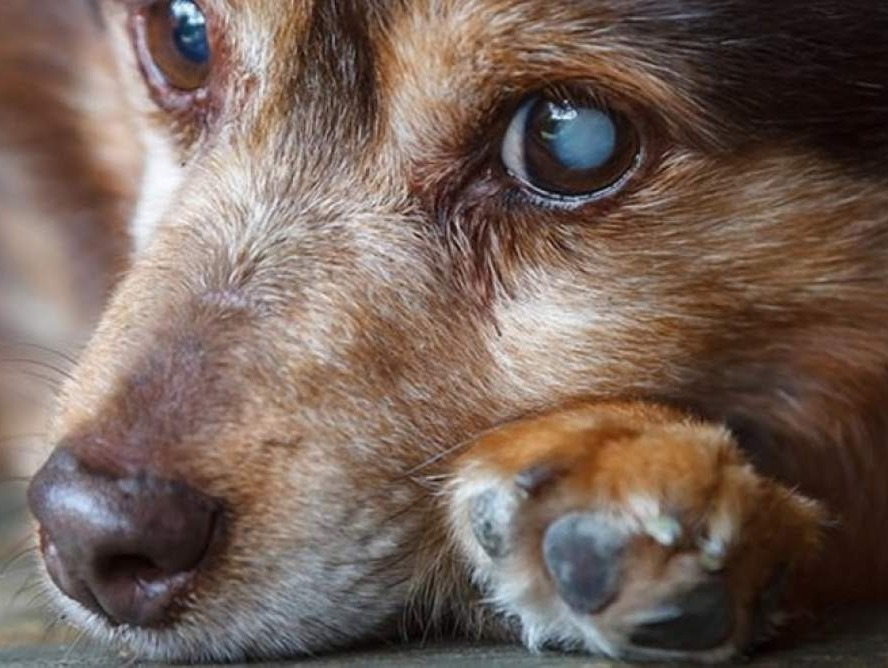

.png)
As almofadas das patas podem ficar mais ásperas – Com o tempo, as patinhas dos cães podem ficar mais secas e endurecidas devido ao desgaste natural.
Cães Idosos
Os cães idosos precisam de lares que compreendam suas limitações e ofereçam conforto. Apesar da idade, muitos ainda mantêm traços de sua personalidade ativa e leal. São ótimos companheiros, valorizando rotinas tranquilas e momentos de carinho.
Curiosidades

Podem desenvolver uma aparência azulada nos olhos – Isso se chama esclerose nuclear e é um processo natural do envelhecimento.
Mudanças na voz – Alguns cães idosos podem latir de forma diferente, com um tom mais rouco ou fraco, devido ao envelhecimento das cordas vocais.
Alex - 9 anos
Plott Hound
Conheça Alex, um menino adorável que espera por um lar há 4 anos. Com cerca de 9 anos de idade, Alex é um companheiro bondoso, já castrado e vacinado. Se você está pronto para dar a ele o amor e a segurança que ele merece, entre em contato e dê a Alex a chance de encontrar sua família para sempre!
AdotarAlcione - 8 anos
Pastor Belga
Como resistir ao olhar da Alcione? Essa menina de 8 anos é uma doçura. Resgatada 8 no estacionamento de um hipermercado, Ela é de porte médio, já está castrada e vacinada, precisa de um tutor com bastante disposição pois é muito medrosa.
AdotarBela - 9 anos
Bulldog
Uma menina de 9 anos que nunca teve a chance de ter um lar. Vivia em um terreno baldio e não conheceu pessoas boas em sua vida, por isso é um pouco medrosa, mas depois de um tempo, ganha confiança. Ela é dócil e precisa de uma família que lhe dê muito amor para ajudá-la a superar todos os anos que viveu sozinha.
AdotarBob-Negão - 10 anos
Rottweiler
É um cão perfeito para companhia. Ele tem 10 anos, e apesar de ter sido resgatado quando estava completamente abandonado na rua, deve ter tido um tutor anteriormente, pois é muito obediente. Bob precisa de um lar calmo, pois é super bonzinho e carinhoso.
Adotar